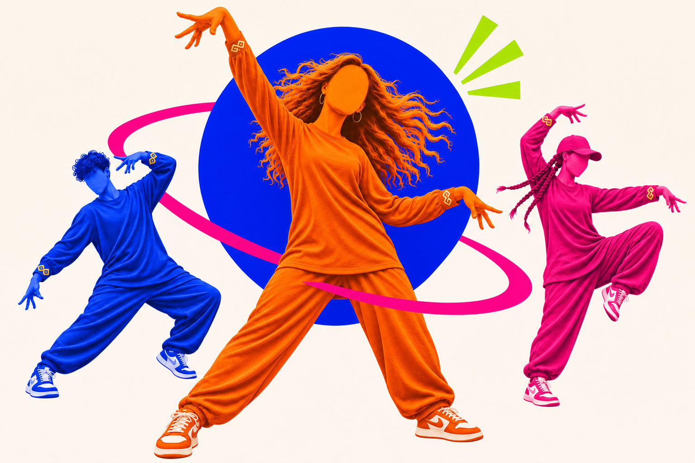

Өзіңе таныс әуен
Қазақша хиттер мен қазақ биінің өрнегін бір ойынға жинағымыз келеді.
ҚАЗАҚША ӘН. БІРГЕ БИЛЕ.
Жаңа ойын тұжырымдамасы
БИ БІЛУБӘРІ БІР ӘННЕН БАСТАЛАДЫ
Биле-биле! — қазақ әндеріне арналған би кеші ойынының идеясы. Экрандағы бишіге ілесіп, өз ортаңмен бірге көңіл көтер.
Қазақша хиттер мен қазақ биінің өрнегін бір ойынға жинағымыз келеді.
Жоспардағы алғашқы нұсқа: ноутбукті теледидарға қосып, бірге ойнау.
Нағыз бишілер түсірген хореография. Жарқын силуэттер. Сенің еркін биің.
БҮГІН ҚАНДАЙ КЕШ?
Достармен басқосу ма, әлде отбасылық кеш пе? Әр отырыстың өз ырғағы бар.
Болашақ ойынның визуалды бағытын байқап көр.
ТАҒЫ БІР-ЕКІ СҰРАҚ
Әзірге бұл — таныстырылым. Ойын, әндер тізімі мен би бейнелері әзірлену кезеңінде. Бұл бетте ойынның визуалды бағыты көрсетілген.
Идеямыз — бәрі қосыла алатын қарапайым қимылдардан бастау. Экрандағы бишіні қайталап, өзіңе ыңғайлы қарқынмен билейсің.
Хореографияны нағыз бишілермен түсіріп, бейнелерін түрлі түсті силуэттерге айналдыруды жоспарлап отырмыз.
КЕЛЕСІ КЕШТЕ КЕЗДЕСКЕНШЕ